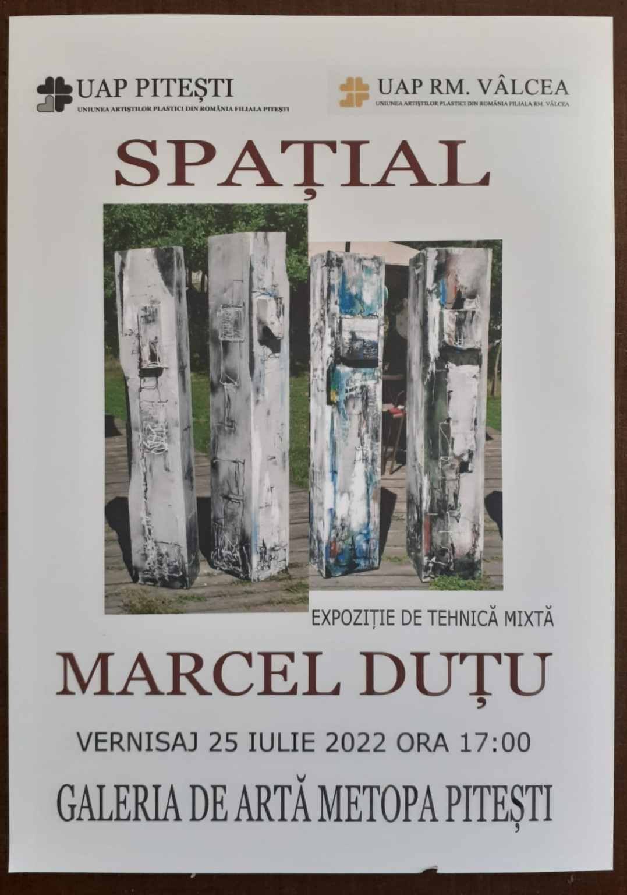
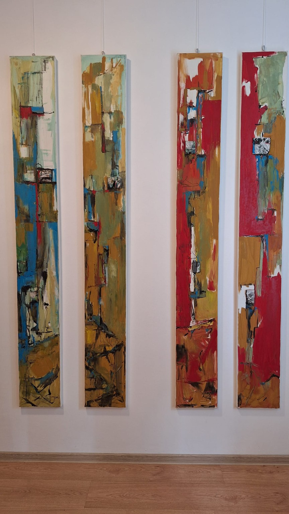

Parcurs expozițional
Expoziții
Materiale din expoziția „SPAȚIAL” și din alte contexte în care au fost prezentate lucrările artistului.

„SPATIAL” — expoziție de tehnică mixtă, Galeria de Artă Metopa, Pitești, vernisaj 25 iulie 2022.

